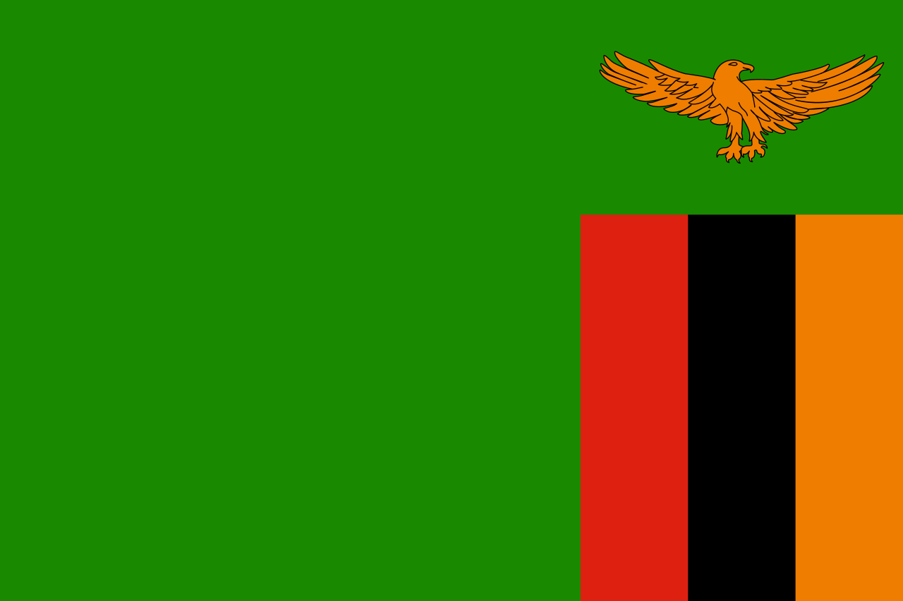

REPUBLIC OF ZAMBIA

"One Zambia, One Nation"
FIRST PRESIDENT
- Kenneth David Kaunda
- Political Party: U.N.I.P.
- In Office From: 24 October 1964.
- In Office until: 2 November 1991.
- Born: 28 April 1924.
- Died: 17 June 2021.
- Aged: 97 Years Old.
SECOND PRESIDENT

- Frederick Jacob Titus Chiluba
- Political Party: M.M.D.
- In Office From: 2 November 1991.
- In Office Until: 2 January 2002.
- Born: 30 April 1943.
- Died: 18 June 2011.
- Aged: 68 Years Old.
THIRD PRESIDENT
- Levy Patrick Mwanawasa.
- Political Party: M.M.D.
- In Office From: 2 January 2002.
- In Office Until: 19 August 2008.
- Born: 3 September 1948.
- Died: 19 August 2008 [In Office].
- Aged: 59 Years Old.
FOURTH PRESIDENT
- Rupiah Bwezani Banda.
- Political Party: M.M.D.
- In Office From: 19 August 2008.
- In Office Until: 23 September 2011.
- Born: 19 February 1937.
- Died: 11 March 2022.
- Aged: 85 Years Old.
FIFTH PRESIDENT
- Michael Sata
- Political Party: Patriotic Front
- In Office From: 23 September 2011.
- In Office Until: 28 October 2014.
- Born: 6 July 1937.
- Died: 28 October 2014 [In Office].
- Aged: 77 Years Old.
Acting President
- Guy Lindsay Scott
- Political Party: U.P.N.D.
- In Office From: 29 October 2014.
- In Office Until: 25 January 2015
- Born: 19 June 1944.
- Aged: 80 Years Old.
SIXTH PRESIDENT

- Edgar Chagwa Lungu.
- Political Party: Patriotic Front
- In Office From: 26 January 2015.
- In Office Until: 24 August 2021.
- Born: 11 November 1956.
- Aged: 66 Years Old.
SEVETH PRESIDENT
Incumbent President
- Hakainde Hichilema
- Political Party: U.P.N.D.
- In Office From: 24 August 2021.
- In Office Until: Present.
- Born: 4 June 1962.
- Aged: 62 Years Old.